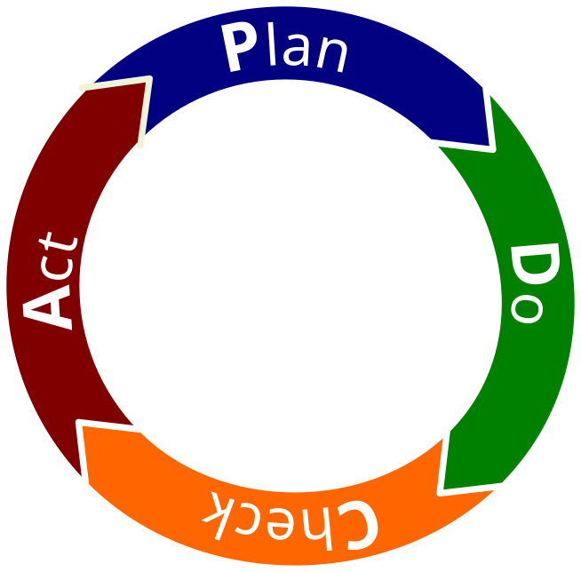

Qualitätsmanagement
Bevor wir uns mit dem PDCA-Zyklus beschäftigen, lohnt sich ein kurzer Blick auf die "Theorie der vollständigen Handlung".
Eine vollständige Handlung besteht aus folgenden Schritten:
Jetzt kommen wir zum PDCA-Zyklus, auch bekannt als Deming-Kreis (nach William Edwards Deming) oder Shewhart-Zyklus (nach Walter Shewhart).
Der PDCA-Zyklus ist nicht einfach nur eine Wiederholung der vollständigen Handlung, sondern setzt auf einer höheren Ebene an: Er dient der systematischen Verbesserung von Prozessen und Produkten.

– Die Grundlage für Verbesserungen legen
– Die Umsetzung der Maßnahmen
– Hat die Maßnahme funktioniert?
– Erkenntnisse in den Regelbetrieb übernehmen
– Kontinuierlicher Verbesserungsprozess Der *KVP (kontinuierlicher Verbesserungsprozess) basiert auf dem PDCA-Zyklus. Die Idee dahinter: Man hört nie auf, nach besseren Lösungen zu suchen. Fehler und Probleme sind keine Katastrophen, sondern Gelegenheiten, um zu lernen und Abläufe zu optimieren.
In der IT heißt das zum Beispiel: